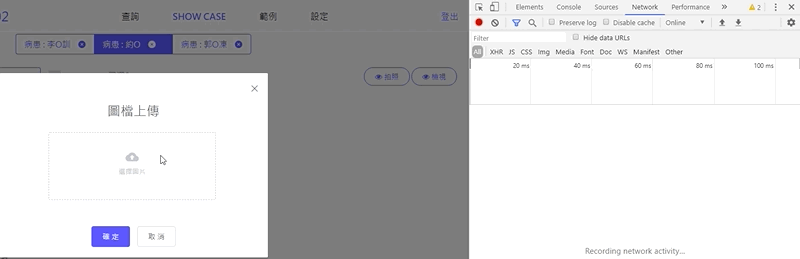
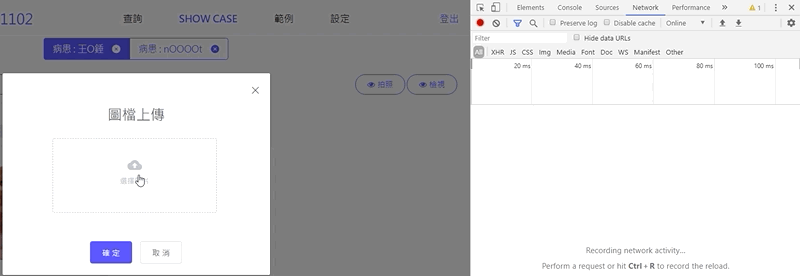
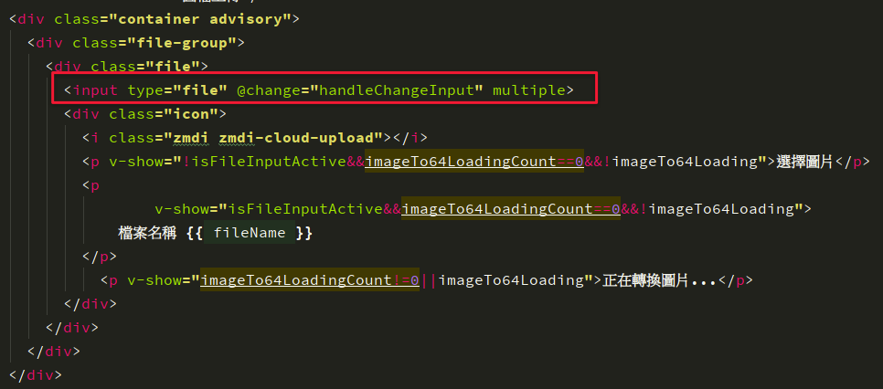
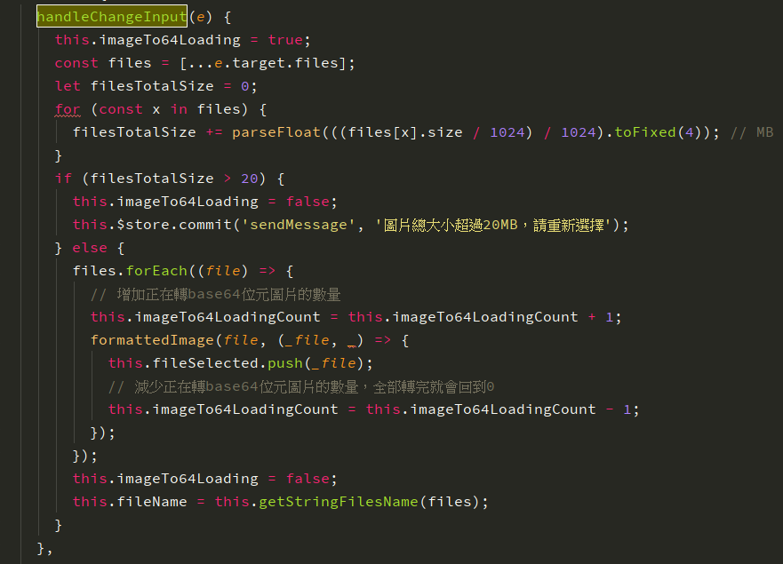

前言
在做網頁系統過程中時常會有需要上傳圖片的需求，而我在做某個案子的時候遇到了個問題，原本工程師寫了一個功能是要上傳圖片到系統中，而他使用了HTML的Input Tag（File Type）。當使用者選取圖片之後，前端會馬上將所有圖片一個一個丟去一個套件中轉換成base64的圖片編碼，並且存入陣列中。而當上傳大量圖片時就會造成前端已經顯示選取圖片完成，而背景卻還在將選取的圖片轉換成base64圖片檔案，造成畫面當機。這篇文要紀錄一下怎麼解決此問題
可以看一下原本的樣子，我選了多張圖片之後，右邊的network其實正在一張一張轉換圖片，而畫面上看起來雖然已經選取完成，但其實還是當機狀態（因為背景在跑）

逐步解決問題
最後解決這個問題的方法是在使用HTML Input Tag選擇圖片時，可以先判斷整體圖片大小，控制所有圖片的總大小是否會太大（轉換成base64會太久），進而去控制是要提示使用者“上傳圖片整體大小過大，請重新選取”，或者是要讓使用者順利選擇圖片，並且點上傳按鈕上傳。
如下圖：

控制所選圖片的整體大小
首先，我在Vue.js的template中程式碼如下圖

程式碼如下：
1 | <div class="container advisory"> |
而點input選取圖片會觸發的handleChangeInput()方法如下圖

程式碼如下
1 | handleChangeInput(e) { |
在程式碼中我們可以看到，當我觸發了input tag change的時候會觸發handleChangeInput方法，並且第一部我會把Vue.js中的 this.imageTo64Loading調整成true，代表背景正在轉換圖片。
接下來下面這段就是先跑過所有圖片，先把圖片的大小累加並存到filesTotalSize變數中
1 | const files = [...e.target.files]; |
然後在我們把圖片丟去轉換成base64格式之前，就會先判斷filesTotalSize是否有超過20MB，超過的話就會直接跳出，並且顯示Error訊息“圖片總大小超過20MB，請重新選擇”
1 | if (filesTotalSize > 20) { |
而如果沒有超過，再繼續進行下面的圖片格式轉換
1 | else { |
圖片轉換中的狀態控制
轉換過程中因為是使用forEach把每個file都跑過，所以每跑過一個就會把this.imageTo64LoadingCount這個變數+ 1，代表現在有幾個圖片正在轉換
而等待formattedImage這個方法的CallBack，就代表轉換完成，就可以把this.imageTo64LoadingCount的數字-1了！
1 | formattedImage(file, (_file, _) => { |
結語
以上就是大略的解決方法，當然忽略了很多小細節的部分，不過就是紀錄一下我大概是怎麼做到多選檔案Size控制，以及轉換圖片時要有一個狀態顯示，並且把下面的確定按鈕Disable掉（取消也一起不能按，因為背景轉換時其實畫面會當掉，所以連取消都要一起卡住不讓使用者點選）